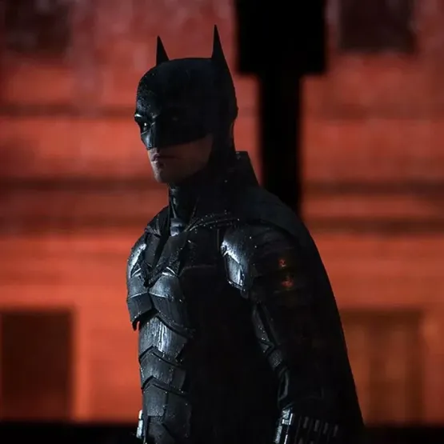

Batman (Bruce Wayne)
Batman, também conhecido como Bruce Wayne, é um dos super-heróis mais icônicos da DC Comics. Criado por Bob Kane e Bill Finger, Batman fez sua primeira aparição em "Detective Comics" #27 em 1939.
História e Origem
Bruce Wayne, filho de Thomas e Martha Wayne, herda uma enorme fortuna após presenciar o assassinato de seus pais quando ainda era criança. Traumatizado pelo crime e motivado pela vingança, Bruce dedica sua vida a combater o crime em Gotham City. Ele treina intensamente tanto física quanto intelectualmente, se tornando um mestre em artes marciais, detetive habilidoso e estrategista brilhante.
Identidade e Missão
Adotando o alter ego de Batman, Bruce utiliza seu vasto arsenal de gadgets tecnológicos, veículos como o Batmóvel e o Batwing, e sua inteligência superior para enfrentar criminosos e vilões perigosos. Diferente de muitos super-heróis, Batman não possui superpoderes, confiando apenas em sua mente afiada, habilidades de combate e recursos tecnológicos.
Impacto Cultural
Batman é um símbolo de justiça e determinação, destacando-se como um herói que luta contra a corrupção e o crime sem depender de superpoderes. Sua popularidade transcende os quadrinhos, tendo sido adaptado para filmes, séries de TV, animações e videogames, solidificando seu status como um dos personagens mais influentes da cultura pop.
Dados do patrimônio de Bruce Wayne
Fonte de riqueza: Wayne Enterprises, uma grande corporação multinacional
Riqueza Estimada US$ 9,2 bilhões (R$ 49,6 bilhões)